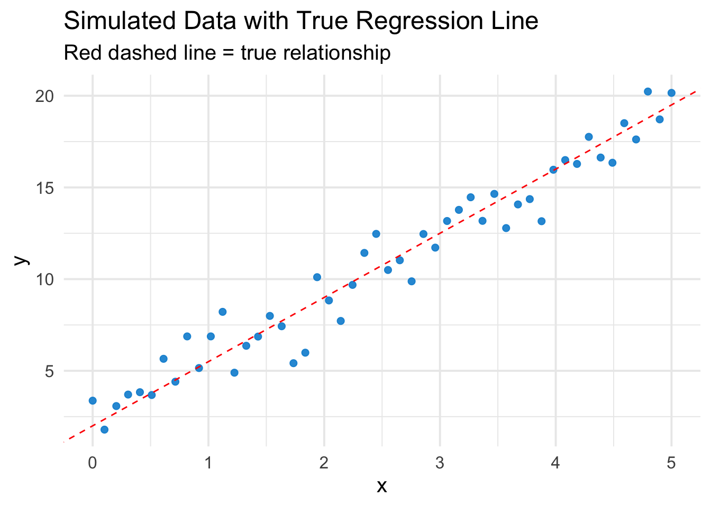
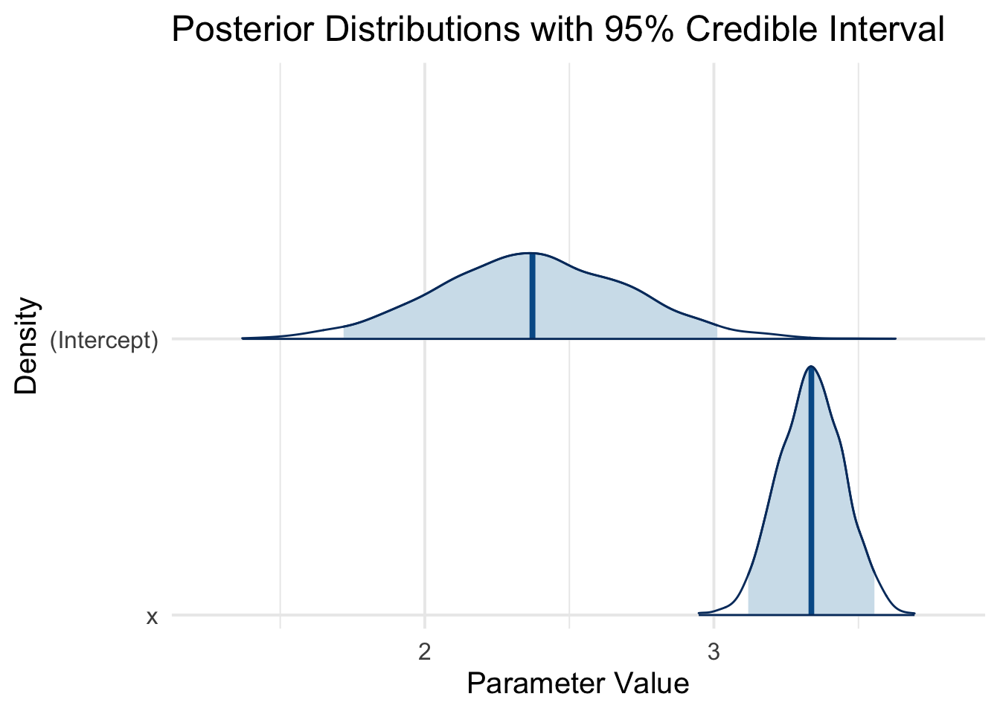
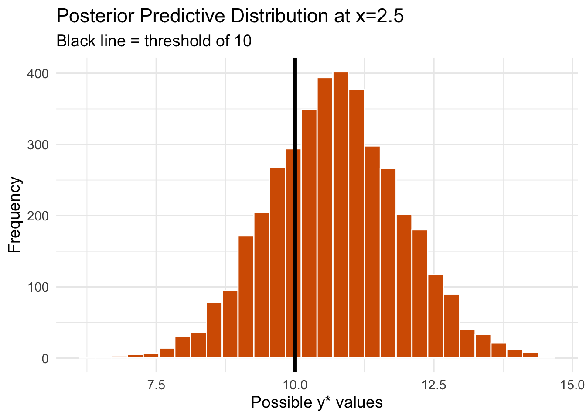

A Gentle Introduction to Bayesian Linear Regression in R
bayesian
regression
This guide walks you through Bayesian linear regression in R and Stan, explaining how priors, likelihoods, and posteriors work in an intuitive and hands-on way.
Author
Jacob Jameson
Published
February 9, 2025
Introduction
Linear regression is a fundamental tool for modeling relationships between an outcome variable and one or more predictors. Traditionally, we often do this via ordinary least squares (OLS). In the frequentist approach, we estimate regression coefficients by finding values that best explain the observed data. The uncertainty in these estimates is represented by confidence intervals (CIs), which describe the expected variation if we were to repeat the entire data-collection process many times.
However, confidence intervals are often misinterpreted. Many people assume a 95% confidence interval means, “There is a 95% probability that the true parameter lies within this interval.” In reality, this is incorrect—CIs do not assign probabilities to parameters. Instead, they describe how often the interval would contain the true parameter across many repeated samples, which is not the way we typically think about uncertainty.
In contrast, Bayesian credible intervals behave the way we actually want these things to work. A 95% credible interval does mean that, given our observed data and model, “There is a 95% probability that the true parameter lies within this range.” This makes Bayesian inference particularly appealing when we want intuitive probability statements about our parameters.
Bayesian linear regression treats model parameters (e.g., intercept, slope) as random variables with their own probability distributions. Instead of producing a single “best” estimate for each coefficient, we derive a posterior distribution, which represents a range of possible values for each parameter, given both:
Our prior beliefs (before seeing the data)
The likelihood of the observed data under the model assumptions
The result is a credible interval, which gives us a direct probability statement about our parameters, making it a powerful tool in statistical modeling.
In this post, we’ll work through an example in R to see:
How the posterior distribution updates from the prior distribution.
How to visualize priors versus posteriors.
How to interpret Bayesian predictions (including posterior predictive distributions).
1. Simulate Some Data
Let’s simulate a small dataset with a linear relationship. Suppose the “true” model is:
x y
1 0.0000000 3.370958
2 0.1020408 1.792445
3 0.2040816 3.077414
4 0.3061224 3.704291
5 0.4081633 3.832840
6 0.5102041 3.679590
Quick Plot of the Data
ggplot(df, aes(x=x, y=y)) +geom_point(color ="#008Fd5", alpha =0.9, size=2) +geom_abline(intercept=beta0_true, slope=beta1_true, color="red", linetype="dashed") +theme_minimal(base_size =15) +labs(title="Simulated Data with True Regression Line",subtitle="Red dashed line = true relationship")

2. Frequentist OLS for Reference
First, we fit a simple OLS model:
ols_model <-lm(y ~ x, data = df)summary(ols_model)
Call:
lm(formula = y ~ x, data = df)
Residuals:
Min 1Q Median 3Q Max
-2.7403 -0.4366 -0.1193 0.8319 2.1072
Coefficients:
Estimate Std. Error t value Pr(>|t|)
(Intercept) 2.3548 0.3175 7.416 1.7e-09 ***
x 3.3438 0.1094 30.555 < 2e-16 ***
---
Signif. codes: 0 '***' 0.001 '**' 0.01 '*' 0.05 '.' 0.1 ' ' 1
Residual standard error: 1.139 on 48 degrees of freedom
Multiple R-squared: 0.9511, Adjusted R-squared: 0.9501
F-statistic: 933.6 on 1 and 48 DF, p-value: < 2.2e-16
We get a point estimate for the intercept and slope plus confidence intervals.
3. Bayesian Linear Regression
Now let’s do a Bayesian version via the rstanarm package. Under the hood, stan_glm uses weakly informative priors by default (you can customize these).
stan_glm
family: gaussian [identity]
formula: y ~ x
observations: 50
predictors: 2
------
Median MAD_SD
(Intercept) 2.372 0.334
x 3.337 0.115
Auxiliary parameter(s):
Median MAD_SD
sigma 1.156 0.117
------
* For help interpreting the printed output see ?print.stanreg
* For info on the priors used see ?prior_summary.stanreg
The summary output gives us:
Posterior mean: The most likely value for each coefficient given the data.
Standard deviation: How uncertain we are about each estimate.
95% credible interval: The range where the true coefficient likely falls with 95% probability.
Unlike frequentist confidence intervals, which describe the long-run variability across repeated samples, Bayesian credible intervals provide a direct probability statement about our parameters.
3.1 What Are Priors Here?
By default, stan_glm(..., family = gaussian()) uses something akin to a weakly informative prior on the slope and intercept. This means the prior allows a wide range of possible values for the coefficients but discourages extremely large magnitudes. You can supply arguments like prior, prior_intercept, etc., or switch to brms for more flexible syntax.
3.2 Posterior Summaries
The printed output typically gives us:
mean: Posterior mean of the parameter.
sd: Posterior standard deviation (akin to “uncertainty”).
2.5% / 97.5%: Bounds of the 95% credible interval.
We can visualize these distributions:
plot(bayes_model, plotfun ="areas", pars =c("(Intercept)", "x"), include =TRUE, prob =0.95, border ="black") +theme_minimal(base_size =15) +labs(title ="Posterior Distributions with 95% Credible Interval",x ="Parameter Value",y ="Density")

Each density plot is the posterior distribution for one parameter, showing the entire spread of plausible values given the model and data. The shaded areas give the 95% credible interval.
4. Explaining the Posterior More Explicitly
4.1 Combining Prior and Likelihood
From a conceptual standpoint, Bayesian regression says:
Prior: What values of \(\beta_0, \beta_1\) are plausible before seeing any data?
Likelihood: Given a candidate pair \((\beta_0, \beta_1)\), how well does it explain our observed \(y\) values?
Posterior: The result of multiplying these together and renormalizing into a probability distribution.
The best way to see this in action is to do a “prior vs. posterior” plot for (say) the slope. Let’s do a quick example of customizing a prior so we can illustrate how it gets updated.
4.1.1 A Very Simple Custom Prior Example
Suppose we suspect the slope is likely around 1.0, with a standard deviation of 2. That means slopes near 1 are more plausible, but we allow for a broad range. Likewise, for the intercept, maybe we suspect a prior mean of 0 with a standard deviation of 10.
stan_glm
family: gaussian [identity]
formula: y ~ x
observations: 50
predictors: 2
------
Median MAD_SD
(Intercept) 2.378 0.344
x 3.335 0.117
Auxiliary parameter(s):
Median MAD_SD
sigma 1.156 0.116
------
* For help interpreting the printed output see ?print.stanreg
* For info on the priors used see ?prior_summary.stanreg
Now, let’s extract the prior and posterior draws and plot them. We can sample from the prior if we specify prior_PD = TRUE (prior predictive distribution).
# Step 1: sample from prior only (no data used)prior_only_model <-stan_glm( y ~ x,data = df,prior =normal(location =1, scale =2, autoscale=FALSE),prior_intercept =normal(location =0, scale =10, autoscale=FALSE),chains=2, iter=2000, seed=123,prior_PD =TRUE# <--- This means: ignore the likelihood of data)
The red or orange curve will show the prior distribution for the slope (centered near 1, quite wide).
The blue curve will show the posterior after seeing the data. Because our true slope is actually 3.5, you’ll see that the posterior is pulled far to the right of the prior’s center of 1. The data “pushes” the posterior to align with the actual effect in the data, reducing uncertainty.
Posterior Predictive Distribution: Why It Matters
So far, we’ve focused on estimating the posterior distribution of our regression parameters. However, in most real-world applications, we’re not just interested in estimating coefficients—we want to use our model to make predictions about future observations.
In a frequentist regression, we typically obtain a point prediction:
along with a prediction interval that accounts for both residual variability and parameter uncertainty.
The Bayesian Approach: Uncertainty in Predictions
In Bayesian regression, we don’t just compute a single best guess for \(y_*\)—we generate an entire posterior predictive distribution, which tells us:
The most likely values of \(y_*\) based on our model.
The full range of plausible values, incorporating both parameter uncertainty and residual variability.
The probability of exceeding a critical threshold, which is extremely useful for decision-making.
Example Use Case:
Suppose \(x_* = 2.5\) represents the duration of a hospital stay, and \(y_*\) represents the total cost of treatment (in thousands).
A hospital administrator might ask:
“What is the probability that this patient’s costs will exceed $10,000?”
“How much uncertainty is there in our cost estimate?”
Instead of a single prediction, the Bayesian posterior predictive distribution provides a full range of possible outcomes, making it much more informative.
Simulating from the Posterior Predictive Distribution
We generate predictions for a new observation \(x_*\) by sampling from the posterior:
where \(\beta_0, \beta_1, \sigma\) are drawn from their posterior distributions.
Let’s compute this for \(x_* = 2.5\) and visualize the range of plausible values for \(y_*\).
# Posterior draws for intercept, slope, and sigmapost_draws_full <-as.matrix(custom_bayes_model)# Function to simulate predictions from posteriorsimulate_posterior_y <-function(x_star, n_sims=4000) { idx_int <-which(colnames(post_draws_full)=="(Intercept)") idx_slope <-which(colnames(post_draws_full)=="x") idx_sigma <-which(colnames(post_draws_full)=="sigma") intercept_samples <- post_draws_full[, idx_int] slope_samples <- post_draws_full[, idx_slope] sigma_samples <- post_draws_full[, idx_sigma]# Compute predicted means, then sample from Normal(mean, sigma) mu_star <- intercept_samples + slope_samples * x_star y_sim <-rnorm(n_sims, mean=mu_star, sd=sigma_samples) y_sim}x_star <-2.5y_sim <-simulate_posterior_y(x_star)# Probability that y_* > 10mean(y_sim >10)
[1] 0.72675
A histogram of simulated outcomes shows the full range of possible \(y_*\) values, allowing us to make probability-based decisions.
library(ggplot2)ggplot(data.frame(y_sim), aes(y_sim)) +geom_histogram(bins=30, fill="#D55E00", color="white") +theme_minimal(base_size =14) +geom_vline(xintercept=10, color="black", linetype="solid", size=1.5) +labs(title="Posterior Predictive Distribution at x=2.5",subtitle="Black line = threshold of 10",x="Possible y* values", y="Frequency")
Warning: Using `size` aesthetic for lines was deprecated in ggplot2 3.4.0.
ℹ Please use `linewidth` instead.

In this case, the probability that \(y_*\) exceeds $10,000 is approximately 73%. This information is crucial for making informed decisions about resource allocation, risk management, or policy interventions.
Key Takeaways: Why This Matters
Unlike traditional frequentist regression, Bayesian posterior predictive distributions allow us to answer probabilistic questions about new data points:
Point Estimate + Full Uncertainty: Instead of a single predicted \(y_*\), we get a distribution over plausible values.
Probability-Based Decisions: We can compute the probability that an outcome exceeds (or falls below) a critical threshold.
More Robust Uncertainty Quantification: Since we account for both parameter uncertainty and residual variance, our predictions are more realistic.
Further Reading:
Introduction to Bayesian Statistics by William Bolstad.
Bayesian Data Analysis by Gelman et al.
The rstanarm, brms, or bayesplot packages in R for specifying, fitting, and visualizing Bayesian models.